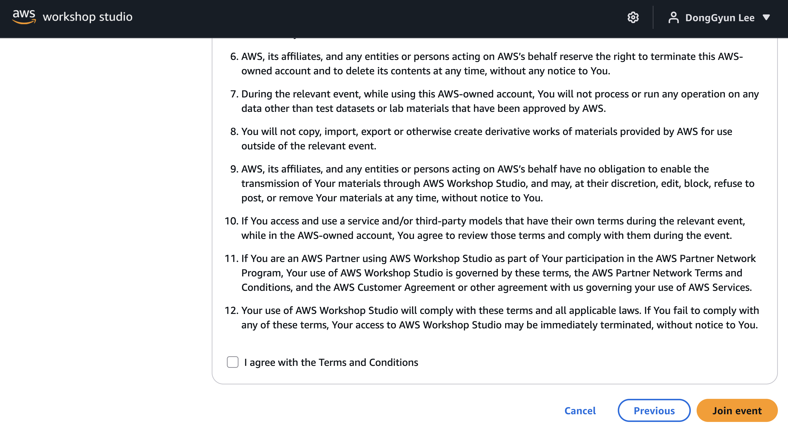
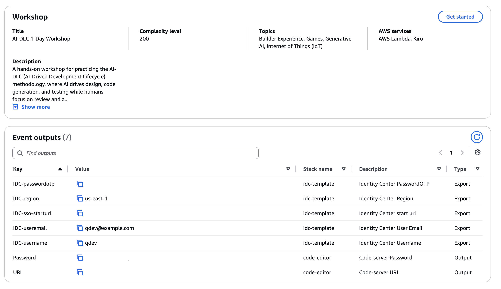
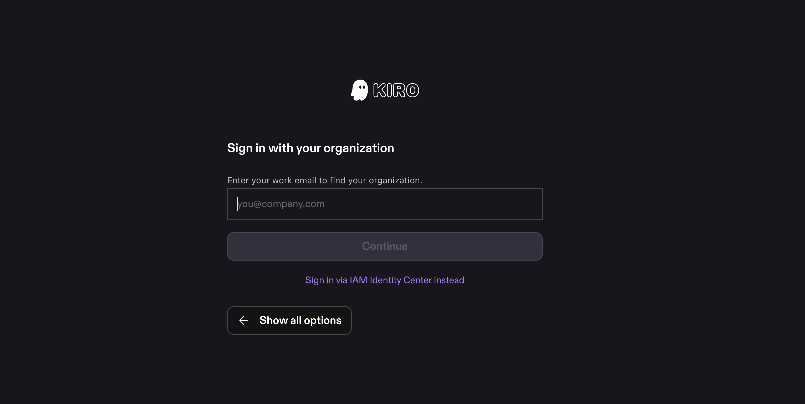
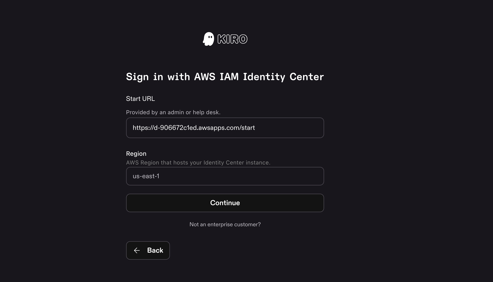
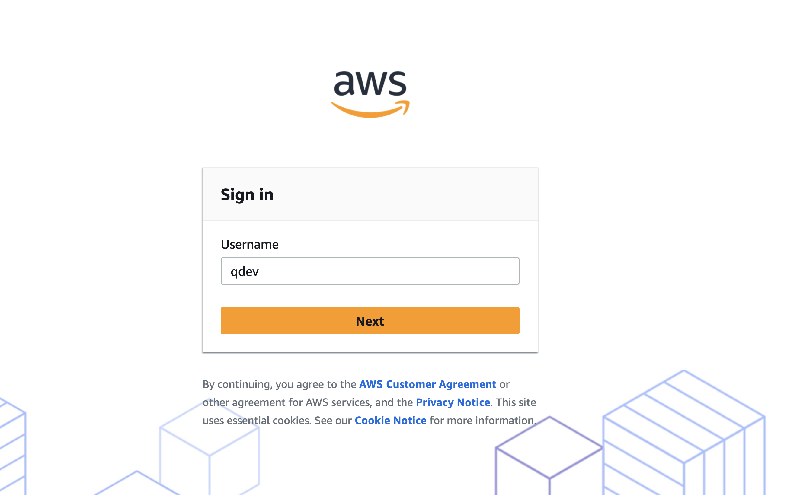
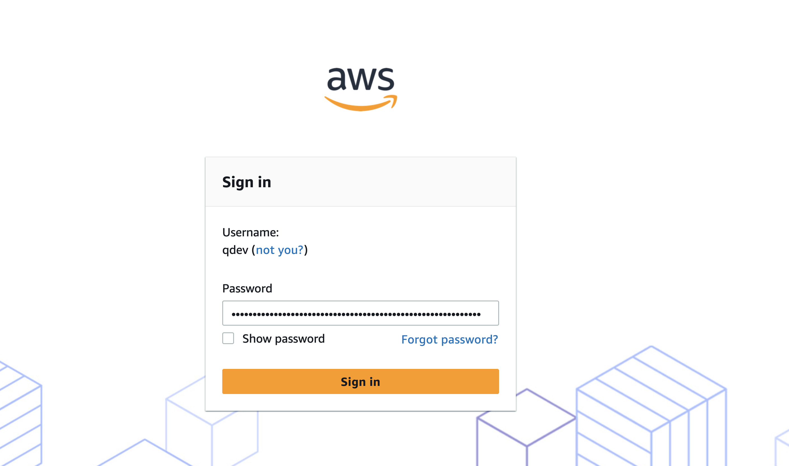
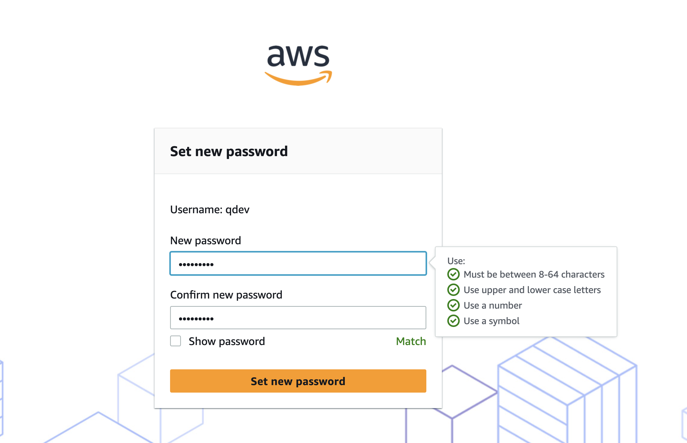
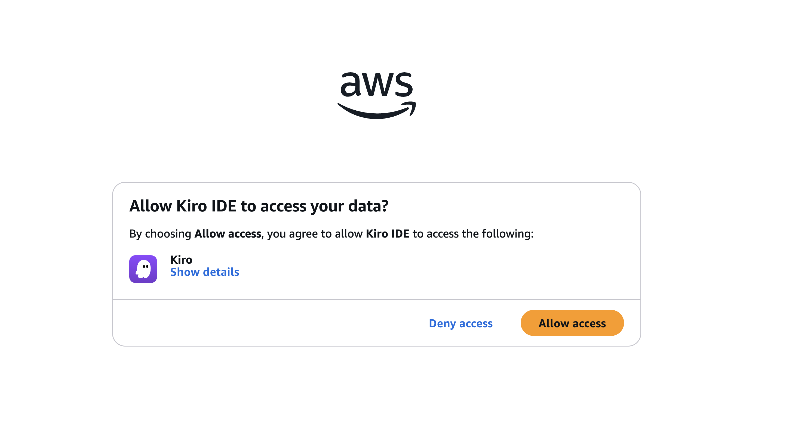

해커톤 Kiro 환경 준비
이 가이드는 해커톤에 참여하는 분을 위한 Kiro 환경 준비 안내입니다. 이벤트는 해커톤이지만, 계정과 실습 환경은 AWS가 제공하는 워크샵(Workshop Studio) 계정을 통해 설정합니다. Workshop Studio 이벤트에 참여하고, 워크샵이 제공한 계정을 준비한 뒤, 설치된 Kiro IDE에 그 계정으로 Sign in(로그인)하는 전 과정을 화면과 함께 따라갑니다.
Kiro IDE는 미리 설치되어 있어야 합니다. 이 가이드는 설치 이후의 이벤트 계정 접속·로그인 과정을 다룹니다. 설치가 필요하면 사전 준비 가이드의 Kiro IDE 설치를 보고 먼저 설치하세요.
해커톤 참가자용 가이드입니다. 해커톤 환경은 AWS 워크샵(Workshop Studio)을 통해 제공되며, 이벤트 기간 동안 Kiro Pro 라이센스가 임시로 제공됩니다. 개인 실습자(별도 계정으로 직접 실습)는 흐름이 다르니 진행자의 안내를 확인하세요.
전체 흐름 한눈에 보기
사전 준비물 체크
시작하기 전에 아래 항목을 확인하세요.
| 항목 | 설명 |
|---|---|
| 개인 노트북 | Windows 10/11(64비트) 또는 macOS / Linux. Kiro IDE가 미리 설치되어 있어야 합니다 (설치 방법은 사전 준비 가이드 참고). |
| 안정적인 인터넷 | 이벤트 로그인, 계정 인증(브라우저), AI 모델 접근에 필요합니다. |
| 회사 이메일 | Workshop Studio 이벤트 로그인에 사용합니다. 회사 이메일 도메인을 써야 하며(예: tester@amazon.com), Email OTP 방식으로 로그인합니다. |
| 이벤트 접근 코드 | 현장 진행자가 알려주는 12자리 코드입니다. 이 코드로 해커톤 이벤트에 참여합니다. |
Part 2 로그인에 필요한 값을 미리 알아두세요. Kiro IDE 로그인 시 IAM Identity Center의
Start URL(https://xxx.awsapps.com/start 형식), Region(예: us-east-1),
사용자 아이디(qdev)·비밀번호(OTP)가 필요합니다.
이 값들은 Part 1에서 이벤트 계정에 접속한 후 워크숍 화면의 Event outputs에서 모두 확인할 수 있습니다.
Workshop Studio 이벤트 계정 접속
해커톤의 실습 환경과 미리 준비된 AWS 계정은 AWS Workshop Studio를 통해 제공됩니다. Workshop Studio에 접속해 Email OTP로 로그인하고, 진행자가 준 이벤트 접근 코드로 참여합니다.
1단계 · Workshop Studio 접속
웹 브라우저에서 아래 주소로 이동합니다.
https://catalog.us-east-1.prod.workshops.aws/join/
2단계 · 회사 이메일 OTP로 로그인
반드시 Email OTP(일회용 비밀번호) 방식으로 로그인하세요. Google 등 소셜 로그인이 아니라 이메일 + 일회용 비밀번호로 진행해야 합니다. AWS 가이드 이벤트에서는 Email OTP를 사용합니다.
그리고 이메일은 반드시 회사 이메일 도메인을 사용해야 합니다. (예: tester@amazon.com)
개인 이메일(gmail 등)이 아닌 회사 도메인 계정으로 로그인하세요.
-
로그인 방법 선택 — Email OTP
선호하는 로그인 방법 중 Email OTP를 선택합니다.

그림 1-1. 로그인 방법으로 Email OTP를 선택합니다. -
회사 이메일 입력 → Send passcode
회사 이메일 도메인 주소(예:
tester@amazon.com)를 입력하고 Send passcode를 누릅니다.
그림 1-2. 회사 이메일을 입력하고 Send passcode를 누릅니다. -
OTP 입력 → Sign in
“Verify your AWS Training and Certification” 제목의 이메일로 전송된 일회용 비밀번호(OTP)를 입력하고 Sign in을 클릭합니다.

그림 1-3. 이메일로 받은 OTP를 입력하고 Sign in합니다.
3단계 · 이벤트 접근 코드로 참여
-
Event access code 입력
이벤트 주최자(진행자)로부터 받은 12자리 Event access code를 입력하고 Next를 선택합니다.

그림 1-4. 12자리 Event access code를 입력하고 Next를 누릅니다. -
약관 동의 → Join Event
워크숍 주소로 접속하면 사용자 동의 화면이 나옵니다. “I agree with the Terms and Conditions”를 체크하고 우측 하단의 Join event를 누릅니다.

그림 1-5. 약관에 동의하고 우측 하단 Join event를 누릅니다. -
IDC 정보 확인 (Event outputs)
Join event를 누르면 이벤트 대시보드(워크숍 화면)로 이동합니다. 아래 주소에서 직접 열 수도 있습니다.
https://catalog.us-east-1.prod.workshops.aws/event/dashboard/ko-KR
화면을 아래로 스크롤하면 Event outputs 영역에 Kiro 로그인에 필요한 IDC 정보가 모두 들어 있습니다. Part 2에서 사용하니 확인해 두세요.

그림 1-6. 이벤트 대시보드를 아래로 스크롤하면 나오는 Event outputs에서 IDC 정보를 확인합니다. Event outputs에서 확인할 IDC 정보IDC-sso-starturlKiro 로그인 시 입력할 Start URL IDC-regionRegion (예: us-east-1)IDC-username사용자 아이디 — qdev IDC-passwordotp최초 로그인용 비밀번호(OTP)
여기까지 하면 이벤트 계정 접속 완료입니다. 확인한 IDC 정보로 Part 2에서 Kiro IDE에 로그인합니다.
Kiro IDE에 Sign in 하기
이제 Kiro IDE를 열고, 워크샵이 제공한 IAM Identity Center 계정으로 로그인합니다. 워크샵에서는 임시 Kiro Pro 라이센스가 제공됩니다. (Start URL·Region 등 IDC 로그인 정보는 Part 1의 Event outputs에서 확인한 값을 사용합니다.)
1단계 · IAM Identity Center로 시작
-
Kiro IDE 실행 → Sign in
Kiro IDE를 열면 나오는 시작(환영) 화면에서 Sign in 버튼을 누릅니다.

그림 2-1. Kiro 시작 화면에서 Sign in을 누릅니다. 이미 다른 계정으로 로그인되어 있나요? 이 시작 화면은 로그아웃 상태에서만 나옵니다. 이미 로그인되어 있다면 먼저 로그아웃하면 이 화면이 나타납니다.
-
로그인 방법 — Your organization 선택
“Choose a way to sign in/sign up” 화면이 나오면, 로그인 방법 중 맨 아래의 “Your organization”을 선택합니다. (Internal · Google · GitHub · Builder ID가 아닙니다.)

그림 2-2. 로그인 방법 중 맨 아래 Your organization을 선택합니다. -
Sign in via IAM Identity Center instead 선택
“Sign in with your organization” 화면이 나오면, 이메일을 입력하지 말고 입력창 아래의 보라색 글씨 “Sign in via IAM Identity Center instead”를 클릭합니다.

그림 2-3. 아래 보라색 글씨 Sign in via IAM Identity Center instead를 클릭합니다. -
Start URL & Region 입력 → Continue
Part 1의 Event outputs에서 확인한 Start URL(
IDC-sso-starturl)과 Region(IDC-region)을 입력하고 Continue를 누릅니다. Start URL은https://xxx.awsapps.com/start형식, Region은us-east-1입니다.
그림 2-4. IDC Start URL과 Region을 입력하고 Continue를 누릅니다.
2단계 · 브라우저에서 계정 로그인 & 권한 승인
Continue를 누르면 웹 브라우저가 열리며 AWS 로그인 페이지로 이동합니다.
-
IDC 사용자 아이디 입력 → Next
Username에
qdev를 입력하고 Next를 누릅니다. (사용자 아이디는qdev로 고정입니다.)
그림 2-5. IDC 사용자 아이디를 입력하고 Next를 누릅니다. -
IDC 비밀번호 입력 → Sign in
Password에 Event outputs의 IDC 비밀번호(
IDC-passwordotp)를 입력하고 Sign in을 누릅니다.여기서 넣는 비밀번호는
IDC-passwordotp입니다. Event outputs 아래쪽의 code-server Password(VS Code 서버 접속용)와 헷갈리지 마세요.
그림 2-6. IDC 비밀번호를 입력하고 Sign in을 누릅니다. -
비밀번호 재설정 (Set new password)
비밀번호 재설정 화면이 나오면 새 비밀번호를 입력합니다. 우측의 4가지 조건이 모두 체크되어야 재설정이 완료됩니다.
새 비밀번호 조건 (4가지 모두 충족):
• 8–64자 • 대문자와 소문자 포함 • 숫자 포함 • 특수문자(symbol) 포함

그림 2-7. 우측 4가지 조건이 모두 체크되면 Set new password를 누릅니다. -
Allow access — 데이터 액세스 허용
“Allow Kiro IDE to access your data?” 화면에서 Allow access를 누릅니다. 그러면 “창을 닫아도 된다”는 화면이 나오고, Kiro IDE로 돌아가면 로그인이 완료되어 있습니다.

그림 2-8. Allow access를 눌러 데이터 액세스를 허용합니다.
3단계 · 로그인 성공 확인
Kiro IDE로 돌아오면 로그인이 완료되어 있습니다.
우측 하단에 Kiro Pro 0 / 1000 이라고 표시되면 로그인 성공입니다.
축하합니다! 우측 하단에 Kiro Pro 0 / 1000이 보이면 모든 환경 준비가 끝난 것입니다.
로그인이 안 되거나 표시가 보이지 않으면, Start URL·Region·IDC 아이디/비밀번호를 다시 확인하고, Kiro IDE를 완전히 종료한 뒤 다시 실행해 보세요. 그래도 안 되면 진행자에게 화면을 보여주세요.
최종 체크리스트
아래 항목이 모두 충족되면 해커톤을 시작할 준비가 끝난 것입니다.
| 완료 | 항목 |
|---|---|
| ☐ | Workshop Studio에 회사 이메일 + Email OTP로 로그인했다 |
| ☐ | 진행자가 알려준 12자리 이벤트 접근 코드로 이벤트에 참여(Join Event)했다 |
| ☐ | Kiro IDE에서 Your organization → IAM Identity Center instead로 Start URL·Region을 입력했다 |
| ☐ | 브라우저에서 IDC 아이디·비밀번호로 로그인하고 비밀번호를 재설정한 뒤 Allow access 했다 |
| ☐ | Kiro IDE 우측 하단에 Kiro Pro 0 / 1000이 표시된다 |
모두 체크되었나요? 환경 준비 완료입니다. 이제 해커톤 실습으로 넘어가세요.